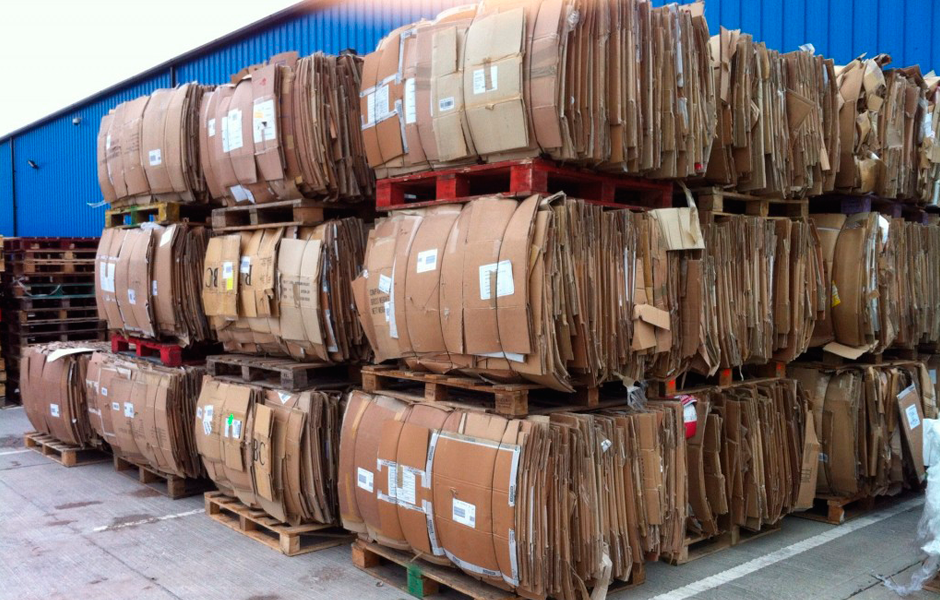
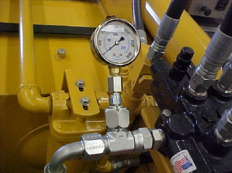

Variables
Peso
El peso de las pacas en el proceso de la industria de residuos aprovechables, es un factor ideal ya que le permite al usuario conocer el material producido o compactado, recibido o despachado.
Imágen extraída de: https://mireciclados.com/wp-content/uploads/2016/02/materiales-carton-contenido.png
Presión
La presión de trabajo es un factor importante a la hora de determinar una falla. Cuando en un sistema hidráulico se detecta que no se está suministrando la suficiente presión hidráulica, es un indicio para comenzar a hallar de donde proviene dicha caída de presión y se comienzan a identificar fugas en los componentes, desgaste en la bomba y otros puntos por los cuales se pueda estar cayendo la presión.
Imágen extraída de :https://tameson.es/pages/manometro-hidraulico
Temperatura

La temperatura de trabajo del aceite hidráulico es vital para prolongar la vida útil del sistema, permitir el flujo eficaz del fluido, y demás variables que intervienen con esta factor. La temperatura de trabajo del aceite hidráulico puede variar dependiendo de su normativa, es decir que la temperatura ambiente a la que trabajará el sistema, define el tipo de aceite que se debe seleccionar. La temperatura ideal de trabajo del aceite hidráulico, oscila entre los 45 y 55 grados centígrados.
Imágen extraída de: https://www.widman.biz/images_boletin/109_graph1_aceites_hidraulicos.png
Horas

Cuando determinamos la cantidad de accionamientos, o las horas de trabajo de algún componente dentro de cualquier sistema, podemos facilitar la planeación del mantenimiento o la predicción de fallas en el mismo.
Imágen extraída de: https://es.wikipedia.org/wiki/Hor%C3%B3metro